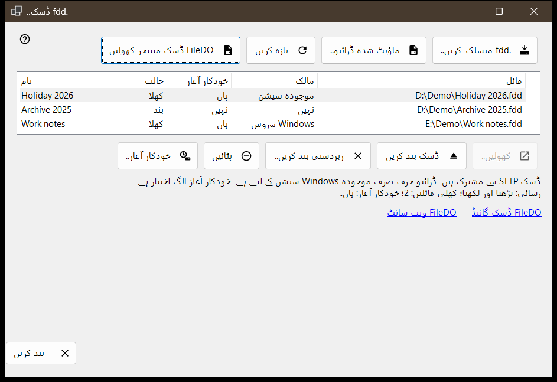
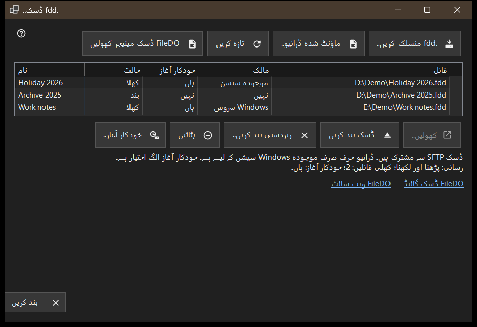

.fdd ڈسک
یہ کس مقصد کے لیے ہے
FileDO کی ان .fdd ڈسکوں کی فہرست دکھاتا ہے جنہیں یہ پی سی SFTP کے ذریعے شیئر کرتا ہے، اور روزمرہ کے ڈسک کمانڈ فراہم کرتا ہے: ڈسک منسلک کرنا، کھولنا یا بند کرنا، اس کا اشتراک روکنا، اور یہ طے کرنا کہ وہ سرور کے ساتھ کھلے یا نہیں۔ یہ Share Manager کی مرکزی ونڈو کے شامل کریں مینو کی .fdd ڈسک.. آئٹم سے کھلتا ہے۔


اس ترتیب میں
- .fdd منسلک کریں.. دبائیں، .fdd فائل چنیں اور اختیارات کے ڈائیلاگ کی تصدیق کریں۔
- فہرست میں ڈسک منتخب کریں؛ فہرست کے نیچے کی لائن اس کا رسائی موڈ، کھلی فائلیں اور خودکار آغاز دکھاتی ہے۔
- بند ڈسک کے لیے کھولیں..، کھلی ڈسک کے لیے ڈسک بند کریں، اور خودکار کھلنے کو بدلنے کے لیے خودکار آغاز.. استعمال کریں۔
- حالت دوبارہ پڑھنے کے لیے تازہ کریں دبائیں؛ ونڈو اسے ہر 10 سیکنڈ بعد خود بھی دوبارہ پڑھتی ہے۔
- باہر نکلنے کے لیے بند کریں دبائیں۔
عناصر
ڈسکوں کی فہرست
ہر قطار ایک شیئر کی گئی ڈسک ہے: نام، حالت (کھلا، کھل رہا ہے، بند ہو رہا ہے، بند، مقفل، خرابی یا نامعلوم)، خودکار آغاز، مالک اور .fdd فائل کا راستہ (کالم فائل)۔ مالک بتاتا ہے کہ ڈسک کو کون کھلا رکھے ہوئے ہے: Windows سروس، موجودہ سیشن، یا نہیں اگر کوئی بھی نہیں۔ پورا راستہ دیکھنے کے لیے قطار پر ماؤس رکھیں۔ پہلی قطار خود منتخب ہو جاتی ہے، اور فہرست کے نیچے کی لائن اس کی رسائی (صرف پڑھنے کے لیے یا پڑھنا اور لکھنا)، کھلی فائلوں کی تعداد اور خودکار آغاز دکھاتی ہے۔ جب شیئرنگ سروس ڈسکیں شیئر نہیں کر سکتی تو فہرست اور کمانڈ کے بٹن چھپ جاتے ہیں اور وہ لائن وجہ بتاتی ہے؛ اور اگر ڈسک FileDO نے خود ماؤنٹ کر رکھی ہو تو FileDO ڈسک مینیجر کھولیں لنک نظر آتا ہے۔
.fdd منسلک کریں..
ایک .fdd فائل چنیں اور اسے اشتراک کے لیے رجسٹر کریں۔ اختیارات کا ڈائیلاگ نام، صرف پڑھنے کے لیے کا انتخاب اور اندراج کے بعد کھولیں (بطور ڈیفالٹ نشان زد) پوچھتا ہے۔ انکرپٹ شدہ ڈسک کے لیے وہ پاس ورڈ بھی مانگتا ہے، اور آپ ڈسک کو ڈرائیو لیٹر دے سکتے ہیں یا بغیر حرف - صرف اشتراک رکھ سکتے ہیں۔ لیٹر صرف موجودہ Windows سیشن تک رہتا ہے۔ اگر ڈسک اب بھی FileDO میں کھلی ہو تو پہلے وہاں محفوظ کر کے بند کریں۔ اگر رجسٹریشن کامیاب ہو مگر ڈسک نہ کھلے تو ایک پیغام یہ بتاتا ہے اور ڈسک بند حالت میں فہرست میں رہتی ہے۔
ماؤنٹ شدہ ڈرائیو..
اس پی سی کی کوئی تیار ڈرائیو چنیں، مثلاً وہ ڈسک جسے FileDO پہلے ہی ماؤنٹ کر چکا ہو۔ ونڈو بند ہو جاتی ہے اور مرکزی ونڈو اس ڈرائیو کے لیے اپنے معمول کے فولڈر شامل کرنے کے مرحلے پر آگے بڑھتی ہے۔
کھولنا، بند کرنا اور ہٹانا
کھولیں.. بند، مقفل یا ناکام ڈسک کو دوبارہ کھولتا ہے اور انکرپٹ شدہ ڈسک کا پاس ورڈ مانگتا ہے۔ ڈسک بند کریں صرف کھلی ڈسک کے لیے دستیاب ہے؛ کلائنٹس عارضی طور پر رسائی کھو دیتے ہیں اور کھلی فائلوں کو بند ہونے کے لیے 30 سیکنڈ تک ملتے ہیں۔ زبردستی بند کریں.. کھلی فائلوں کو فوراً منقطع کر دیتا ہے، اس لیے غیر محفوظ شدہ ڈیٹا ضائع ہو سکتا ہے۔ ہٹائیں اشتراک روک دیتا ہے: ڈسک بند ہو جاتی ہے، اس کی خودکار آغاز کی ترتیب اور محفوظ کردہ کلید حذف ہو جاتی ہے، اور .fdd فائل باقی رہتی ہے۔ ان میں سے ہر ایک پہلے تصدیق مانگتا ہے، اور ڈیفالٹ جواب منسوخ ہے۔
خودکار آغاز
خودکار آغاز کالم ہر ڈسک کے لیے اسے منتخب کیے بغیر ہاں یا نہیں دکھاتا ہے۔ ڈیش (-) کا مطلب ہے کہ شیئرنگ سروس خودکار آغاز کو سپورٹ نہیں کرتی؛ تب خودکار آغاز.. غیر فعال رہتا ہے۔ خودکار آغاز.. تصدیق کے بعد ترتیب بدلتا ہے: آن کرنے پر ڈسک سرور کے ساتھ کھلتی ہے اور انکرپٹ شدہ ڈسک کا پاس ورڈ اس پی سی کے محفوظ Windows اسٹور میں رکھا جاتا ہے؛ آف کرنے پر وہ محفوظ کلید حذف ہو جاتی ہے۔ یہ ترتیب حالت سے آزاد ہے، اس لیے بند یا ناکام ڈسک پر بھی خودکار آغاز آن ہو سکتا ہے۔ مرکزی ونڈو کی فہرستوں میں FileDO کی قطاریں بھی اسے دکھاتی ہیں۔
گائیڈ، ویب سائٹ اور بند کریں
FileDO ڈسک گائیڈ اور FileDO ویب سائٹ FileDO کی گائیڈ اور سائٹ کھولتے ہیں، یعنی اس پروگرام کی جس سے یہ ڈسکیں آتی ہیں۔ اگر اس پی سی پر FileDO ڈسک مینیجر نہ ملے تو ونڈو بتاتی ہے کہ FileDO کو اس کی ویب سائٹ سے انسٹال کریں۔ بند کریں ونڈو سے باہر نکلتا ہے؛ جب ڈسک پر کوئی آپریشن چل رہا ہو تو ونڈو بند نہیں کی جا سکتی۔
مینیجر کی ترتیبات · SFTP اشتراک کی ترتیبات · ایکسچینج سرور کی ترتیبات